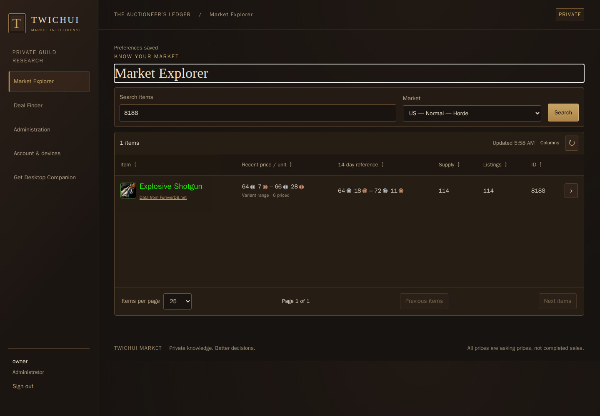
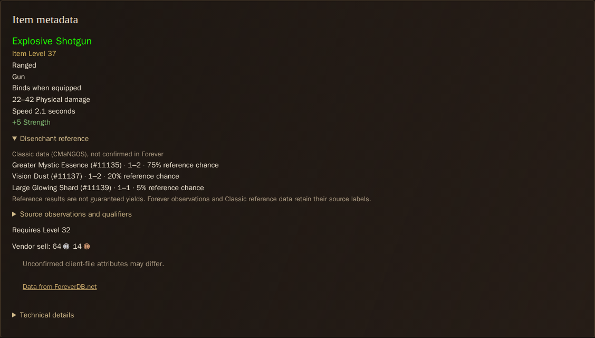
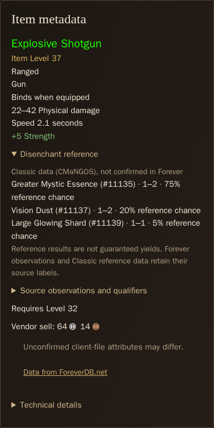
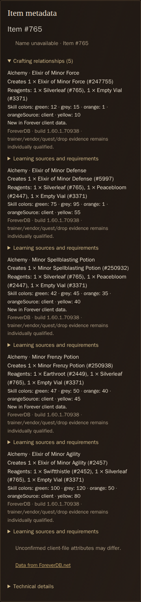
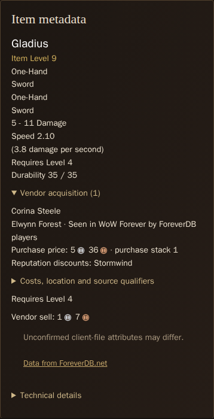
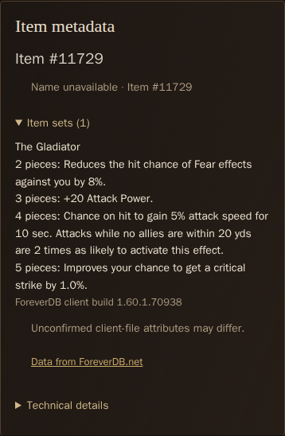
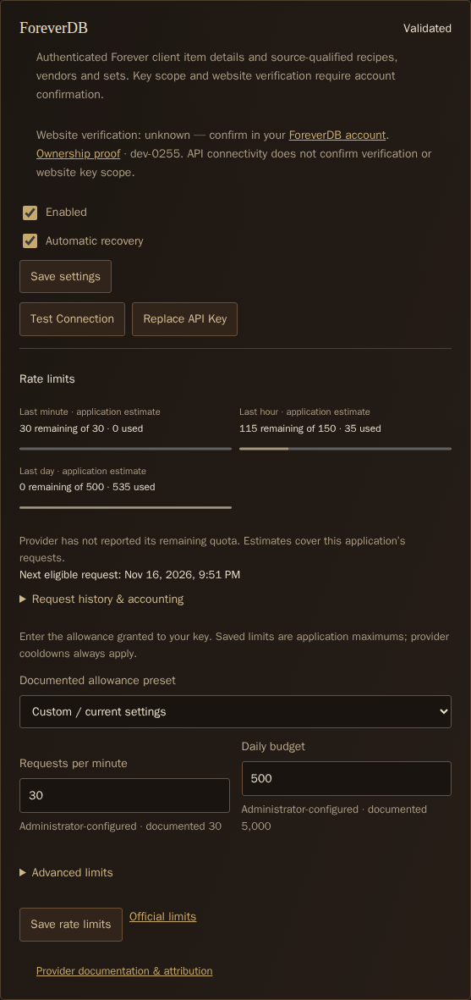

Actual https://market.twich.gg browser evidence, 2026-11-16, release 6bb71a6. These scenes use genuine production observations and real provider responses. Isolated fixture/browser evidence is separate in CI artifacts. Account-side ForeverDB Verify and website key scope remain unconfirmed.






